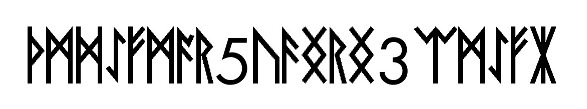

The image hidden in LP1-03
The decoded JPEG, its archived rune transcription, and exact reproduction steps.
On this page
LP1-03 has two different images to examine: the visible runic manuscript page and a smaller JPEG encoded inside its signed OutGuess message. The known Vigenère reading of the manuscript does not automatically decode the second image.
The decoded derivative

The derivative is 587 × 109 pixels and 15,188 bytes. Download the JPEG. Its checksum is recorded in the payload manifest.

Archived transcription
The pinned iBotPeaches archive supplies this transcription:
ᚦᛗᛞᛇᚠᛗᚪᚱ5ᚢᚫᛝᚱᛝ3 ᛠᛗᛇᚠᛡIt contains 18 runes and the decimal digits 5 and 3. In the wiki’s alphabet labels, with spaces inserted between individual symbols for clarity:
TH M D EO F M A R 5 U AE NG R NG 3 EA M EO F IAThose labels are a transliteration, not established plaintext. The added spaces above identify symbol boundaries; they are not a new claim about word boundaries in the image. Decimal digits remain digits rather than becoming rune indices.
How to reproduce the image
First follow OutGuess extraction for LP1-03 and verify its signed message. Decode the hexadecimal suffix of the exported body:
from pathlib import Path
body = Path("exports/steganography/lp1-03.body.txt").read_text()
image = bytes.fromhex(body[body.index("ffd8ffe"):])
assert len(image) == 15188
with open("lp1-03-decoded.jpg", "xb") as output:
output.write(image)The exclusive-create mode refuses to overwrite an existing file. This reproduces a format conversion, not a proposed solution to the image’s text. Keep the original signed body and the derivative as separate files.
Sources
Pinned transcription of the embedded image · Signed block · Message body · Payload inventory.